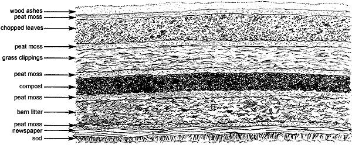

It's easy to turn your existing vegetable or flower plot into a lasagna garden. In fall or late winter, simply stomp down any remaining growth, cover with thick pads of wet newspaper, and start layering.